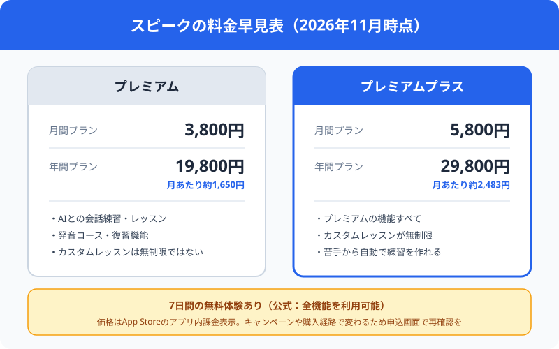
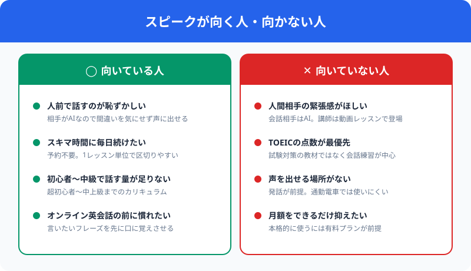

スピークの広告をよく見るんですが、年額だとそこそこの値段ですよね。払う価値があるのか判断したいです。
判断の軸は「毎日声を出して練習する習慣を作れそうか」です。この記事では料金と機能を公式情報で整理したうえで、向く人・向かない人をはっきり分けて解説します。
スピークとは｜基本情報
スピーク（Speak）は、米国のSpeakeasy Labs, Inc.が提供するAI英会話アプリです。スマホに向かって英語を話すと、AIが聞き取って返事をしたり、不自然な表現をその場で直したりしてくれます。
| 項目 | 内容（2026年11月時点） |
|---|---|
| 提供元 | Speakeasy Labs, Inc. |
| 対応端末 | iPhone（App Store）／Android（Google Play） |
| 対象レベル | 超初心者〜中上級者（公式FAQ） |
| 実績（公式サイト表記） | 1,500万ダウンロード・評価4.8・法人導入500社以上 |
| 無料体験 | 7日間（全機能を利用可能） |
| 有料プラン | プレミアム／プレミアムプラス |
法人向けには「スピーク for Business」があり、ビジネス英語コースやロールプレイを社員研修に使えるプランも用意されています。この記事では個人向けプランを中心に解説します。
スピークの料金プラン｜プレミアムとプレミアムプラスの違い
スピークの公式サイトには具体的な金額の掲載がなく、料金はアプリやWebの申込画面で表示されます。ここではApp Storeのアプリ内課金に表示されている価格をもとにまとめます。

| プラン | 月間 | 年間 | 年間の月あたり |
|---|---|---|---|
| プレミアム | 3,800円 | 19,800円 | 約1,650円 |
| プレミアムプラス | 5,800円 | 29,800円 | 約2,483円 |
※ App Storeのアプリ内課金表示（2026年11月25日確認）。Webからの申し込みやキャンペーン時は金額が異なる場合があります。
違いは「カスタムレッスン」を無制限に使えるか
公式サイトでは、プレミアムプラスについて「スピークを最大限活用するならプレミアムプラスがおすすめ」とし、カスタムレッスンが無制限で利用できると説明しています。カスタムレッスン（メイドフォーユー）は、会話で間違えた表現などをもとに、自分専用の練習を自動で作る機能です。
月払い同士で比べると差は2,000円ですが、年間プランなら差は1万円です。年間プランは月払いの約5か月分の金額で1年使える計算になるため、続けられる自信があるなら年間のほうが割安です。
いきなりプレミアムプラスの年間プランを選ぶ必要はありません。無料体験でカスタムレッスンをどれくらい使ったかを見てから決めると、払いすぎを防げます。
スピークでできること｜主な機能
公式サイトで紹介されている主な機能は次のとおりです。
| 機能 | 内容 |
|---|---|
| AIとの会話練習 | 時間を気にせずAI相手に英語を話せる |
| その場のフィードバック | 会話中の不自然な表現を、自然な言い方と一緒に示す |
| カスタムレッスン | 自分の間違いをもとに専用の練習を自動生成（メイドフォーユー） |
| スピークチューター | チャット形式で表現の疑問をAIに質問できる |
| 発音コース・発音コーチ | コース「伝わる発音・聞き取れる英語」と発音チェック |
| 復習・継続の仕組み | 復習機能、連続学習日数（ストリーク）、リーグ、通知 |
レッスンは、講師の動画で表現を学ぶ→声に出して繰り返す→AIと会話して使ってみる、という流れで進みます。「わかる」で終わらせず、口から出るまで反復させる設計がスピークの特徴です。
1日の使い方の目安
機能が多いぶん、最初は何から触ればいいか迷いがちです。続けやすい組み立て方の一例を挙げます。
- レッスンを1本（約5〜10分）：その日の表現を動画で学び、声に出して繰り返す
- AIとの会話で使ってみる（約5分）：覚えた表現を自分の話に入れて話す
- 指摘された表現を復習（数分）：フィードバックやカスタムレッスンで言い直す
合計15分ほどでも、毎日続ければ1か月で7時間以上英語を口に出す計算になります。発音が気になる人は、週に数回だけ発音コースを差し込むとバランスがとれます。時間がない日はレッスン1本だけにして、連続学習日数を切らさないことを優先すると習慣が崩れにくくなります。
スピークの評判｜良い点と気になる点
公式サイトではストア評価4.8、日本のApp Store教育カテゴリで1位を獲得したと案内されています。ここでは、機能と料金体系から見て評価されやすい点と、事前に知っておきたい点を整理します。
良い点
- 間違えても恥ずかしくない：相手がAIなので、言い直しを何度でもできる
- 予約がいらない：5分だけ空いた時間でも1レッスン進められる
- 弱点に合わせて練習が増える：カスタムレッスンで、自分が間違えた表現を重点的に練習できる
- 続ける仕掛けがある：ストリークやリーグで、毎日開くきっかけが作られている
気になる点
- 料金は安くない：年間プランでも月あたり1,650円〜。無料プランだけで使い続ける前提のアプリではない
- 声を出せる場所が必要：電車やオフィスでは発話練習がしにくい
- 人間との会話とは別物：聞き返しや表情への反応など、生の会話の練習にはならない
- 自動更新に注意：体験期間を過ぎると有料プランに切り替わるため、解約するなら期間内に
オンライン英会話と比べたらどうなんでしょう？
役割が違うと考えるのがおすすめです。スピークで言いたい表現を口に覚えさせて、オンライン英会話で「人に通じるか」を試す。この順番だと講師との時間を無駄にしにくくなります。
スピークが向く人・向かない人

向いている人
- 人前で英語を話すのが恥ずかしい人：AI相手なら間違いを気にせず声に出せる
- スキマ時間で毎日続けたい人：予約不要で、1レッスン単位で区切りやすい
- 英語を知っているのに口から出ない人：反復で「知っている」を「言える」に変える設計
- オンライン英会話の前に準備したい人：言いたいフレーズを先に固められる
向いていない人
- 人間相手の緊張感で鍛えたい人：会話相手はAI。講師は動画レッスンで登場する形
- TOEICの点数アップが最優先の人：会話練習が中心で、試験対策の教材ではない
- 声を出せる時間と場所がない人：発話が前提のアプリ
- できるだけ費用を抑えたい人：まずはChatGPTの音声モードなど無料の手段から試すのも手
無料体験の始め方と解約の注意点
無料体験の始め方
- App Store（iPhone）またはGoogle Play（Android）で「スピーク」をインストールする。Webの公式サイトから申し込む方法もあります
- アプリを開き、学習の目的や現在のレベルを選ぶ
- 表示されたプランから選び、7日間の無料体験を開始する
- 体験開始日と終了日をカレンダーに入れておく
体験中は、「毎日10〜15分」「指摘された表現を3つメモ」の2つだけ決めて取り組むと、続けられるかどうかを判断しやすくなります。
解約は購入した経路から
公式FAQでは「スピークの購読は、購入方法に応じて解約できます」とされています。アプリを削除しただけでは解約にならない点に注意してください。
| 申し込んだ経路 | 解約する場所 |
|---|---|
| App Store（iPhone） | 「設定」→自分の名前→「サブスクリプション」→スピーク |
| Google Play（Android） | Playストア→プロフィール→「お支払いと定期購入」→「定期購入」 |
| Web（公式サイト） | 公式ヘルプの案内に従う |
他のAI英会話アプリと比べると？
スピークと比べられやすいのが、同じくAIと会話するアプリのTalkfulです。App Storeの表示では、Talkfulの1年プランもプレミアム19,800円・プレミアムプラス29,800円と、スピークの年間プランと同じ価格帯です。
| 項目 | スピーク | Talkful |
|---|---|---|
| 練習の中心 | フレーズの反復＋自由会話 | シーン別ロールプレイ・カスタム会話 |
| 向いている人 | 英語が口から出ない段階を抜けたい人 | 面接・旅行など使う場面が決まっている人 |
| 年間プラン（App Store） | 19,800円／29,800円 | 19,800円／29,800円 |
発音特化のELSA Speakや、無料で試せるChatGPTの音声モードも含めた比較は「AI英会話アプリおすすめ5選｜目的別の選び方と料金比較」でまとめています。英語の会議を字幕や翻訳で乗り切る方法を知りたい方は「英語会議を乗り切るAIツール5選」も参考にしてください。
よくある質問
まとめ
スピークは「英語を知っているのに口から出ない」状態を抜け出すための練習に強いアプリです。料金は年間プランで月あたり約1,650円〜と安くはありませんが、7日間の無料体験で全機能を試してから判断できます。
スピークの評判・料金 まとめ
- 料金：プレミアム 月3,800円／年19,800円、プレミアムプラス 月5,800円／年29,800円（App Store表示）
- プランの違い：プレミアムプラスはカスタムレッスンが無制限
- 向く人：人前で話すのが苦手、スキマ時間で毎日続けたい初心者〜中級者
- 向かない人：人間相手の練習やTOEICの点数を最優先したい人
- 始め方：無料体験で1週間続くか確認し、続くなら年間プランが割安
参考：
スピーク公式サイト（機能・FAQ・無料体験）／
AI英会話スピーク（App Store・アプリ内課金）／
AI英会話Talkful（App Store）（いずれも2026年11月25日確認）